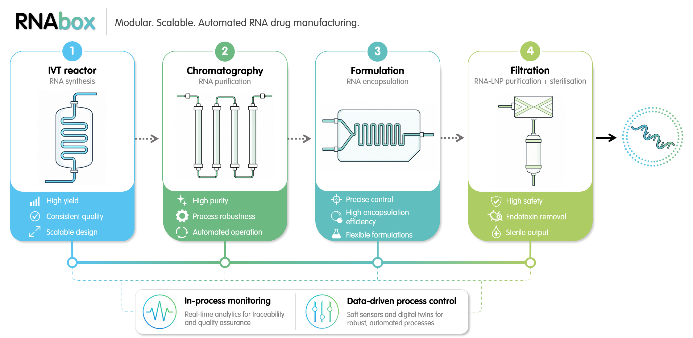
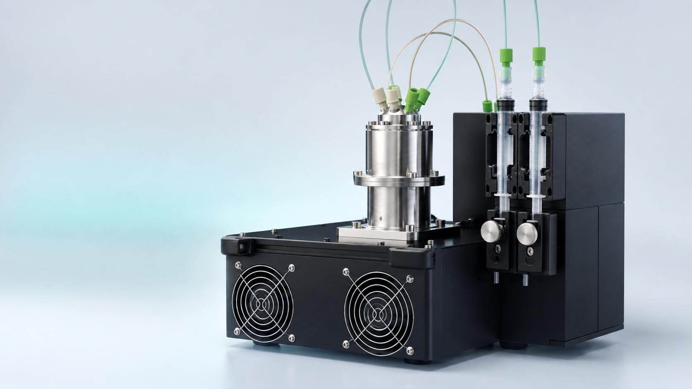
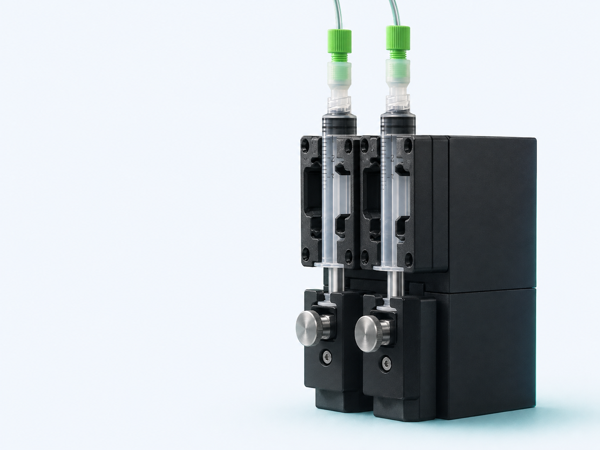
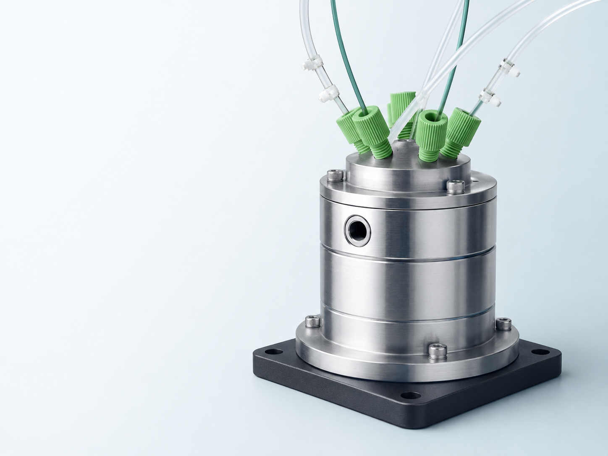
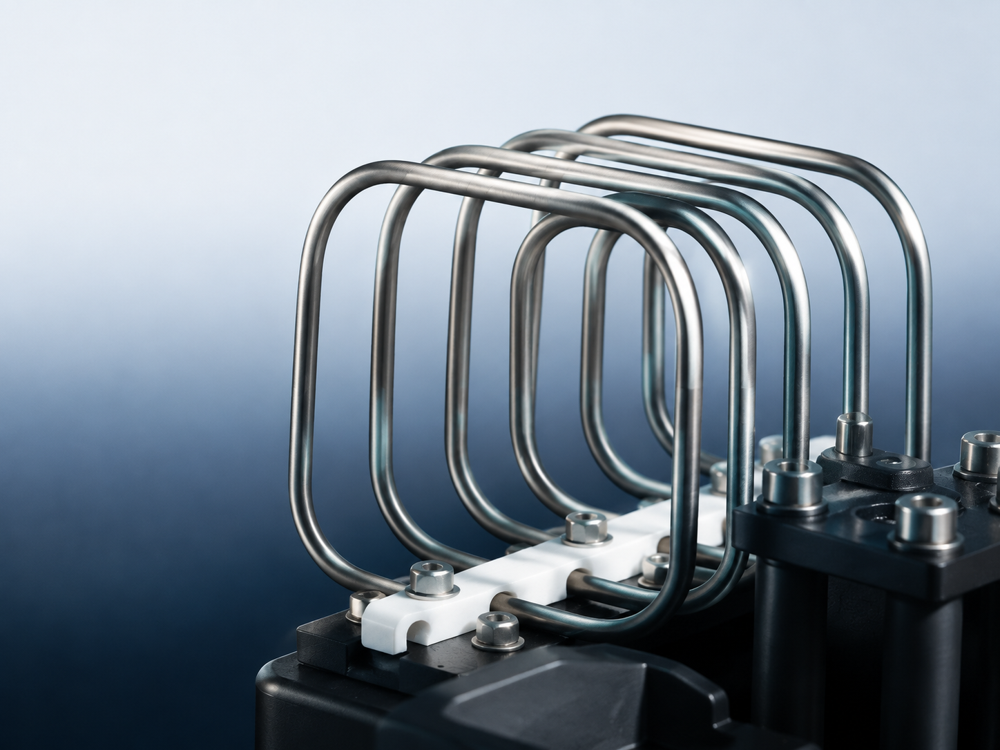

RNAbox™
A modular platform and technology programme for flexible RNA medicine manufacturing.
Technology
RNAbox™ is a modular, digitally enabled manufacturing platform designed to support flexible, scalable RNA medicine manufacturing.

Technology programme
A modular platform and technology programme for flexible RNA medicine manufacturing.
Progressive deployment into existing infrastructure and workflows.
Connected manufacturing, monitoring and data-informed process control.
Refinement, pilot deployment planning and partner-led evaluation.
RNAbox™ overview
RNAbox is RNA Forge's vision for a flexible, scalable manufacturing platform that connects unit operations, analytics and digital control while allowing capabilities to be introduced progressively.
Built from real-world data: RNAbox is engineered directly from insights gained through RNA Forge's day-to-day custom manufacturing and bioanalytical services.
Modular manufacturing
RNAbox is being developed around compact, reconfigurable hardware modules and standardised interfaces to support a reduced deployment footprint and easier integration.
Individual capabilities can be introduced and evaluated progressively, allowing the manufacturing architecture to develop with programme needs rather than requiring wholesale infrastructure replacement.
Modular system concepts
Selected concept illustrations show how modular manufacturing, fluid handling, chromatography and reaction operations could be configured within the RNAbox platform.




Integrated analytics & control
The technology programme connects synthesis, purification and formulation with increasing levels of monitoring, analytics and data-informed process control.
The objective is to improve product understanding and support more consistent decisions across RNA process development.
Development roadmap
Prototype refinement and pilot deployment planning are under way across integrated workflows and modular deployment concepts.
The next stage is partner-led evaluation using representative workflows and real system data, with deployment requirements defined before any public performance claims.
Discuss RNAbox™
Talk to RNA Forge about manufacturing challenges, integration priorities and pilot deployment planning.